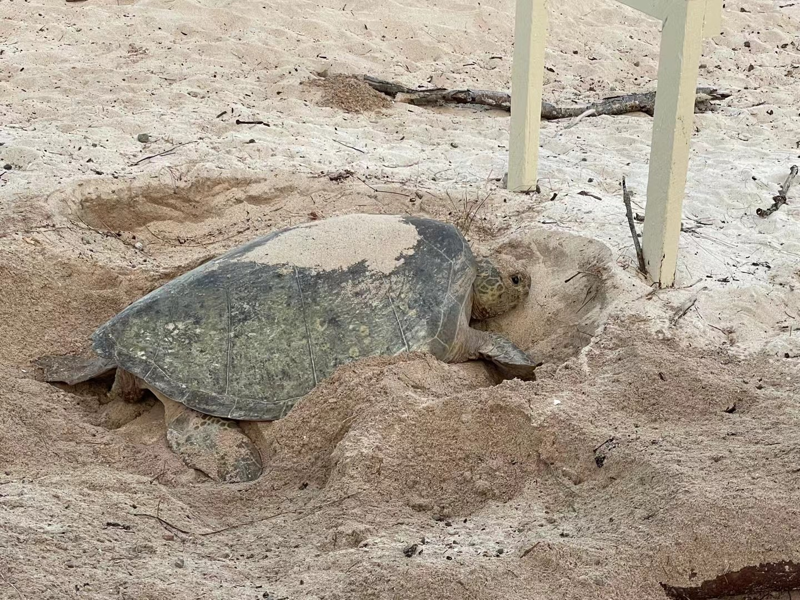
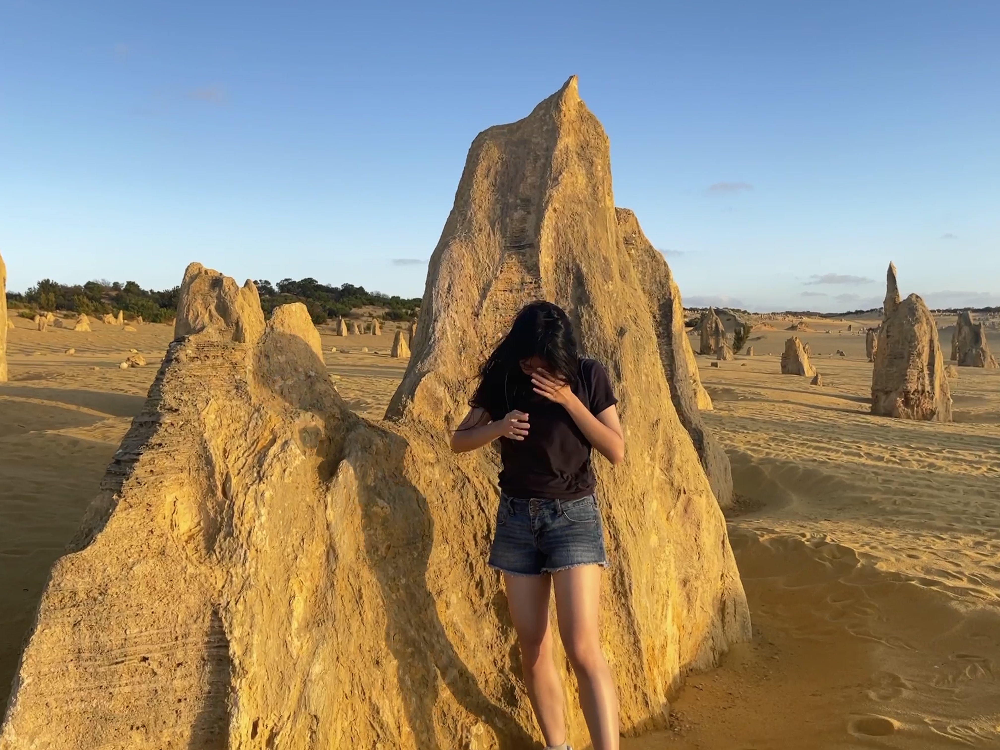
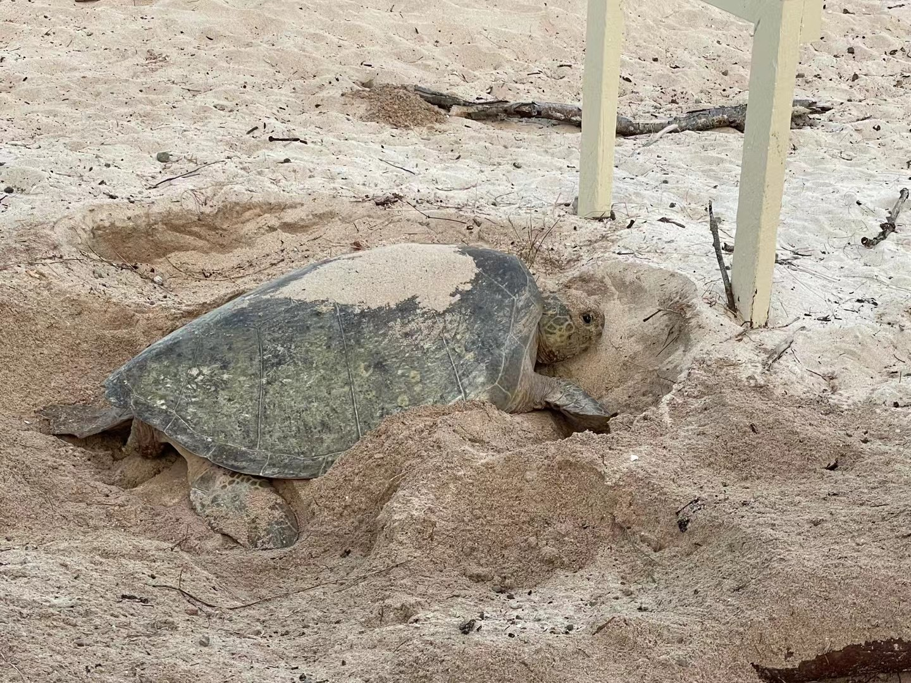
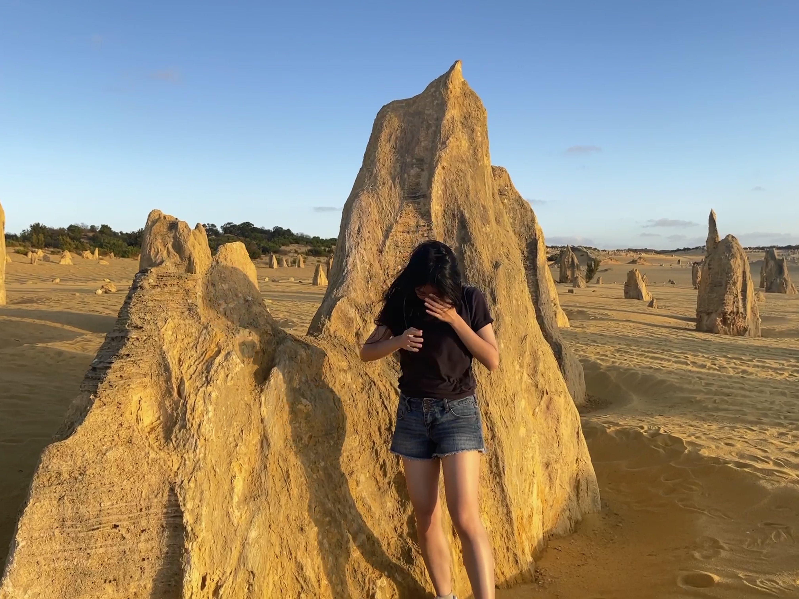

When I first started my research, I thought I had to read one paper per day, absorb as much information as possible, and that eventually, ideas would naturally emerge. But I quickly realized that research isn’t about efficiency in the way coursework is. It isn’t about checking off papers or completing assignments—it’s about allowing time and space for ideas to emerge. Some of my best insights didn’t come from reading faster, but from wandering while reading, letting my thoughts expand in unexpected directions. Research, at its core, is about curiosity and openness, not rigid goals.
Uncertainty
If the answer were already known, there wouldn’t be research in the first place. At first, I struggled with this—weeks without visible progress felt frustrating. But over time, I realized that progress in research isn’t linear; it’s recursive. You get stuck, you find a way forward, you get stuck again, and you keep going. I now treat this process as something natural—like breathing. The hard part isn’t solving a specific technical problem; it’s acknowledging how much I don’t know while still having faith in my ability to figure things out. If I’m stuck for more than three days, I seek help. No ego, just learning.
Failure
I don’t see failure as a setback but as a Bayesian update. Each failed idea doesn’t just show me what doesn’t work—it sharpens my understanding of what might. That’s why I enjoy reading about history, business, economics, and the lives of different people—to train my intuition, much like how we train neural networks. Without loss, a model cannot learn; if there is only positive feedback, it becomes vulnerable to negative attacks. I believe that well-developed intuition leads to better decision-making in life.
“Some failure in life is inevitable. It is impossible to live without failing at something, unless you live so cautiously that you might as well not have lived at all.”
— J.K. Rowling
To me, failure is as normal as breathing. And it isn’t pathetic to think this way, because as long as I keep going, success will become just as normal.
Motivation
I love uncertainty. I hate feeling stagnant. If everything were predictable, I would get bored. Research, for me, isn’t just about academia—it’s a mindset, a way of constantly asking questions about everything in life: What is this? Why is that? I don’t just want to consume knowledge; I want to create and contribute.
I also feel a deep sense of gratitude. My supervisor, one of the top professors in our department, chose me as his only undergraduate honours student this year, a privilege I don’t take for granted. I believe that privilege comes with responsibility.
“To whom much is given, much is expected.”
This isn’t a burden—it’s a source of power. I feel fortunate to be in a position where I can contribute something meaningful.
A Year of Commitment, Growth, and Gratitude
This year, I worked harder than ever—not because I believe in no pain, no gain, but because my love for what I do outweighs the pain. Normally, I’m someone who is picky about food and values good sleep, but this year, I sometimes found myself eating oatmeal with water for lunch just to save time for the work I wanted to do, or waking up in the middle of the night to write down an idea before it disappeared. Not because I had to, but because I wanted to. Because this journey is mine, by choice.
Read my full honours thesis (PDF)
Continuing the Journey
I am currently collaborating with a senior PhD student on a research project in 3D synthesis and reconstruction, aiming for submission to ICCV in March 2025. This project expands my expertise beyond human motion synthesis, focusing on advanced techniques for reconstructing and generating complex 3D structures with greater accuracy and realism.


 





![Congratulations graduation[Live]!](images/live.jpg)